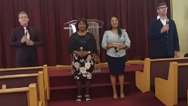
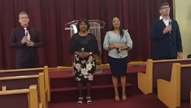

Boletín de la Iglesia
Sábado 16 de Abril 2022
Culto de Adoración
"¿Por qué buscáis entre los muertos
al que está vivo. No está aquí; ha
resucitado. Recordad que él os habló
de esto cuando estaba en Galilea"
Lucas 24:5

Primer Segmento
Grupo de Alabanzas: (10:50 AM)Entrada Plataforma: (11:00 AM)
Doxología: Congregación
Invocación: Pr. Reynaldo Ojeda
Segundo Segmento
Bienvenida: _____________Anuncia himno: ____________
Himno: # 105 "Cristo ha resucitado"
Lectura bíblica: ____________
Texto bíblico: Lucas 24:5
Adoración: _____________
Respuesta: Congregación y piano
Tercer Segmento
Diezmos y ofrendas: ____________Congregación canta alabanzas
Diáconado recibe las ofrendas
Oración por diezmos y ofrendas
Segmento Pastoral
Presentación de niñosRecibiendo nuevos miembros
Oración intercesora por enfermos
Anuncios extraordinarios
Presentación predicador invitado
Cuarto Segmento
Selección musical: AlabanzaSermón: Pr. Reynaldo Ojeda jr.
Himno: # 104 "La tumba le encerró"
La Cena del Señor
Nota: Al iniciar el himno:Ancianos, diáconos y diaconisas
se forman en el pasillo
así entramos tan pronto
termine el himno. Gracias
Salida Organizada diaconado
 

Entendiendo el Sobre de Ofrendas
LEE BIEN LOS NUMEROS
Fecha ______________________
Nombre_____________________
Celular # (_____) ______-______
OFRENDAS IGLESIA LOCAL 1 - 10
1. Ofrendas Adoración (Iglesia Local)
6. Otras Ofrendas (Inversión local)
Nota: Estas dos ofrendas (1 y 6) son usadas para la administración de la Iglesia Local. Mortgage, luz, agua, internet, limpieza, mantenimiento, seguros, licencias de la ciudad, reparaciones, compra de equipamiento, pago de deudas. etc, etc, etc.
5. Ofrendas Pro-Templo Local
10. Proyecto Especial (Parking Iglesia)
Nota: Estas dos ofrendas (5 y 10) son para proyectos locales de la Iglesia, relacionados con el edificio del templo y el parqueo.
2. Ofrendas E. Sabática y M. Personal
3. Ofrendas Ministerio Infantil
4. Ofrendas Ministerio Juvenil
9. Ministerio Femenino Local
Nota: Estas ofrendas (2, 3, 4, 9) son para que estos cinco departamentos las administren en su planes de programación y en sus planes misioneros. Las ofrendas de E. Sabática se comparten a la mitad con el departamento de Ministerio Personal.
7. Club Conquistadores Local
8. Club Aventureros Local
Nota: Estas dos ofrendas (7, 8) son para aquellos que son miembros de estos dos clubes. Aquí en el sobre, pueden depositar sus aportes al club, sea por membresía o para eventos o gastos específicos del Club. Todo el que desee, también puede apoyar voluntariamente a los Clubes.
LAS OFRENDAS SUELTAS DE LOS VIERNES EN LA SOCIEDAD DE JOVENES Y LOS SABADOS EN LA ESCUELA SABATICA, SON PARA EL USO DE ESOS DEPARTAMENTOS RESPECTIVAMENTE (ESCUELA SABATICA Y MINISTERIO JUVENIL) EN SUS PLANES LOCALES DE EMMANUEL TAMPA
Nota: Una parte (%) de las ofrendas sueltas de la Escuela Sabática es enviada a las Misiones Mundiales cada mes. (Las que se dan en cash suelto en el platillo, no en el sobre de ofrendas)
MISIONES MUNDIALES & IGLESIA MUNDIAL (Fíjate bien de aquí hacia abajo)
Todas estas ofrendas son para la obra mundial. Ninguna se queda en la iglesia local.
1. DIEZMOS 10% (Ministerio Pastoral)
Nota: El diezmo lo recibe la Conferencia en su totalidad y lo usa para sostener el ministerio pastoral en todo el mundo. Del diezmo no se queda ni un centavo en la iglesia local.Tenlo presente.
2. Fondo Inversión (Misiones Mundiales)
5. 13er Sábado (Misiones Mundiales)
Nota: Estas dos ofrendas (2 y 5) son para sostener las Misiones que la Iglesia Adventista desarrolla en el mundo, llevando el Evangelio a países donde poco se conoce a Jesucristo y su Palabra, o donde no hay presencia Adventista, o muy poca.
3. Calendario Mundial por mes
Nota: Esta ofrenda (3) es enviada cada mes a un Ministerio Mundial diferente:
Enero: Libertad Religiosa.
Febrero: Televisión Adventista.
Marzo: Radio Mundial Adventista.
Abril: (CRS) Ministerio ayuda ciegos.
Mayo: Proyectos Alivio Desatres y Hambruna.
Junio: Ministerios Multilingues.
Julio: Apoyo Min. de la Mujer Mundial.
Agosto: Universidades Adventistas.
Septiembre: Misión de Otoño.
Octubre: Min. Voz de la Profecía.
Noviembre: Ofrenda Anual Misiones.
Diciembre: Evangelismo Grandes Ciudades.
4. Desarrollo Conferencia.
Nota: Esta ofrenda (4) es usada para planes de desarrollo de nuestra Conferencia Local, asi como el Campground donde se hacen las reuniones importantes de las iglesias.
6. Educación Adventista.
Nota: Esta ofrenda (6) Es usada para apoyar a las escuelas de nuestra Conferencia. En Tampa, Orlando, Miami, etc. La conferencia tiene escuelas Primarias, Secundarias y Hight School tambien.
7. Fondo Desastres Mundiales (ADRA).
Nota: Esta ofrenda (7) la usa la Iglesia Adventista mundial para ayudar en terremotos, huracanes, guerras, en destrucción en cualquier lugar del mundo.
PARA SER SINCERO, NUESTROS MIEMBROS ADVENTISTAS EN ESTOS TIEMPOS ACTUALES, PRESTAN POCA ATENCION A LAS OFRENDAS.
SEAN OFRENDAS LOCALES U OFRENDAS MUNDIALES.
POR ESA RAZON, TANTO LA IGLESIA LOCAL COMO LA IGLESIA MUNDIAL TIENE RECURSOS MUY LIMITADOS PARA CUMPLIR LA MISION.
TAMBIEN PARA TENER EDIFICIOS COMO NUESTROS MIEMBROS JOVENES, NIÑOS Y ADULTOS MERECEN.
Nota: Si la mayoría de los miembros diera cada mes, solamente $1.00 dollar en cada una de las ofrendas para la obra mundial, eso haría una gran diferencia en el cumplimiento de la Misión.
PERO TENGAN EN CUENTA QUE LA MAYOR CANTIDAD DE OFRENDAS QUE USTED DE, DEBE SER PARA LA IGLESIA LOCAL, PORQUE NUESTRA PRIMERA RESPONSABILIDAD ES LOCAL Y SOMOS MENOS LOS QUE APOYAMOS LA IGLESIA LOCAL QUE LA IGLESIA MUNDIAL.
SEAMOS PRODIGOS EN APOYAR LA CAUSA DE NUESTRO DIOS.
GRACIAS.
"Dad a Jehová la Gloria debida a su nombre". Salmo 92:2
Nota: La Iglesia no obliga a ninguna persona, miembro o no, a ofrendar o diezmar. Aunque moral, ética y espiritualmente se supone que todos tenemos el deber de sostener el Evangelio; finalmente el compromiso de cada cual es con Dios.
Es a Dios a quien realmente un día tendremos que rendir cuentas, de forma personal, por la manera en que administramos los recursos; los cuales incluyen el uso del tiempo, los talentos, las finanzas, nuestro cuerpo, nuestra familia, nuestra iglesia. TODO LO QUE SOMOS Y TODO LO QUE TENEMOS.
Nombre_____________________
Celular # (_____) ______-______
OFRENDAS IGLESIA LOCAL 1 - 10
1. Ofrendas Adoración (Iglesia Local)
6. Otras Ofrendas (Inversión local)
Nota: Estas dos ofrendas (1 y 6) son usadas para la administración de la Iglesia Local. Mortgage, luz, agua, internet, limpieza, mantenimiento, seguros, licencias de la ciudad, reparaciones, compra de equipamiento, pago de deudas. etc, etc, etc.
5. Ofrendas Pro-Templo Local
10. Proyecto Especial (Parking Iglesia)
Nota: Estas dos ofrendas (5 y 10) son para proyectos locales de la Iglesia, relacionados con el edificio del templo y el parqueo.
2. Ofrendas E. Sabática y M. Personal
3. Ofrendas Ministerio Infantil
4. Ofrendas Ministerio Juvenil
9. Ministerio Femenino Local
Nota: Estas ofrendas (2, 3, 4, 9) son para que estos cinco departamentos las administren en su planes de programación y en sus planes misioneros. Las ofrendas de E. Sabática se comparten a la mitad con el departamento de Ministerio Personal.
7. Club Conquistadores Local
8. Club Aventureros Local
Nota: Estas dos ofrendas (7, 8) son para aquellos que son miembros de estos dos clubes. Aquí en el sobre, pueden depositar sus aportes al club, sea por membresía o para eventos o gastos específicos del Club. Todo el que desee, también puede apoyar voluntariamente a los Clubes.
LAS OFRENDAS SUELTAS DE LOS VIERNES EN LA SOCIEDAD DE JOVENES Y LOS SABADOS EN LA ESCUELA SABATICA, SON PARA EL USO DE ESOS DEPARTAMENTOS RESPECTIVAMENTE (ESCUELA SABATICA Y MINISTERIO JUVENIL) EN SUS PLANES LOCALES DE EMMANUEL TAMPA
Nota: Una parte (%) de las ofrendas sueltas de la Escuela Sabática es enviada a las Misiones Mundiales cada mes. (Las que se dan en cash suelto en el platillo, no en el sobre de ofrendas)
MISIONES MUNDIALES & IGLESIA MUNDIAL (Fíjate bien de aquí hacia abajo)
Todas estas ofrendas son para la obra mundial. Ninguna se queda en la iglesia local.
1. DIEZMOS 10% (Ministerio Pastoral)
Nota: El diezmo lo recibe la Conferencia en su totalidad y lo usa para sostener el ministerio pastoral en todo el mundo. Del diezmo no se queda ni un centavo en la iglesia local.Tenlo presente.
2. Fondo Inversión (Misiones Mundiales)
5. 13er Sábado (Misiones Mundiales)
Nota: Estas dos ofrendas (2 y 5) son para sostener las Misiones que la Iglesia Adventista desarrolla en el mundo, llevando el Evangelio a países donde poco se conoce a Jesucristo y su Palabra, o donde no hay presencia Adventista, o muy poca.
3. Calendario Mundial por mes
Nota: Esta ofrenda (3) es enviada cada mes a un Ministerio Mundial diferente:
Enero: Libertad Religiosa.
Febrero: Televisión Adventista.
Marzo: Radio Mundial Adventista.
Abril: (CRS) Ministerio ayuda ciegos.
Mayo: Proyectos Alivio Desatres y Hambruna.
Junio: Ministerios Multilingues.
Julio: Apoyo Min. de la Mujer Mundial.
Agosto: Universidades Adventistas.
Septiembre: Misión de Otoño.
Octubre: Min. Voz de la Profecía.
Noviembre: Ofrenda Anual Misiones.
Diciembre: Evangelismo Grandes Ciudades.
4. Desarrollo Conferencia.
Nota: Esta ofrenda (4) es usada para planes de desarrollo de nuestra Conferencia Local, asi como el Campground donde se hacen las reuniones importantes de las iglesias.
6. Educación Adventista.
Nota: Esta ofrenda (6) Es usada para apoyar a las escuelas de nuestra Conferencia. En Tampa, Orlando, Miami, etc. La conferencia tiene escuelas Primarias, Secundarias y Hight School tambien.
7. Fondo Desastres Mundiales (ADRA).
Nota: Esta ofrenda (7) la usa la Iglesia Adventista mundial para ayudar en terremotos, huracanes, guerras, en destrucción en cualquier lugar del mundo.
PARA SER SINCERO, NUESTROS MIEMBROS ADVENTISTAS EN ESTOS TIEMPOS ACTUALES, PRESTAN POCA ATENCION A LAS OFRENDAS.
SEAN OFRENDAS LOCALES U OFRENDAS MUNDIALES.
POR ESA RAZON, TANTO LA IGLESIA LOCAL COMO LA IGLESIA MUNDIAL TIENE RECURSOS MUY LIMITADOS PARA CUMPLIR LA MISION.
TAMBIEN PARA TENER EDIFICIOS COMO NUESTROS MIEMBROS JOVENES, NIÑOS Y ADULTOS MERECEN.
Nota: Si la mayoría de los miembros diera cada mes, solamente $1.00 dollar en cada una de las ofrendas para la obra mundial, eso haría una gran diferencia en el cumplimiento de la Misión.
PERO TENGAN EN CUENTA QUE LA MAYOR CANTIDAD DE OFRENDAS QUE USTED DE, DEBE SER PARA LA IGLESIA LOCAL, PORQUE NUESTRA PRIMERA RESPONSABILIDAD ES LOCAL Y SOMOS MENOS LOS QUE APOYAMOS LA IGLESIA LOCAL QUE LA IGLESIA MUNDIAL.
SEAMOS PRODIGOS EN APOYAR LA CAUSA DE NUESTRO DIOS.
GRACIAS.
"Dad a Jehová la Gloria debida a su nombre". Salmo 92:2
Nota: La Iglesia no obliga a ninguna persona, miembro o no, a ofrendar o diezmar. Aunque moral, ética y espiritualmente se supone que todos tenemos el deber de sostener el Evangelio; finalmente el compromiso de cada cual es con Dios.
Es a Dios a quien realmente un día tendremos que rendir cuentas, de forma personal, por la manera en que administramos los recursos; los cuales incluyen el uso del tiempo, los talentos, las finanzas, nuestro cuerpo, nuestra familia, nuestra iglesia. TODO LO QUE SOMOS Y TODO LO QUE TENEMOS.
Conexión a AdventistGiving
Una opción para ofrendar
Toca el botón
Explicando AdventistGiving
AdventistGiving es una aplicación de la Iglesia Adventista en Norte América. Fue hecha con el propósito de facilitar a los miembros de la iglesia, y también a no miembros, el envío de diezmos y ofrendas a la iglesia local, así como a la Conferencia.
También ofrendas que tienen el propósito de apoyar específicamente planes mundiales como por ejemplo, ahora mismo: Ukrania y otros proyectos de ayuda.
Usted se registra usando la opción Login, y luego puede enviar sus ofrendas con relativa facilidad, ahorrándose la necesidad de usar dinero cash o cheque.
Las ofrendas demoran unos días en llegar, pero finalmente van directo a la cuenta de la iglesia local, o a donde correspondan.
Es simplemente una opción para los que lo necesiten usarla. Porque no importa en qué parte del mundo usted se encuentre viajando, usted todavía puede enviar sus ofrendas a su iglesia local y sostener su iglesia sin interrupción.
Las opciones regulares se mantienen, nos referimos a la ofrenda en el culto de adoración con el sobre regular de la iglesia local.
Gracias por sostener su iglesia local y la obra de predicar el evangelio en todo el mundo.
Nota: Si usted usa AventistGiving, cuando necesite un recibo de sus depósitos, lo puede imprimir en la misma aplicación de AdventistGiving. No a través de la iglesia local. Gracias.